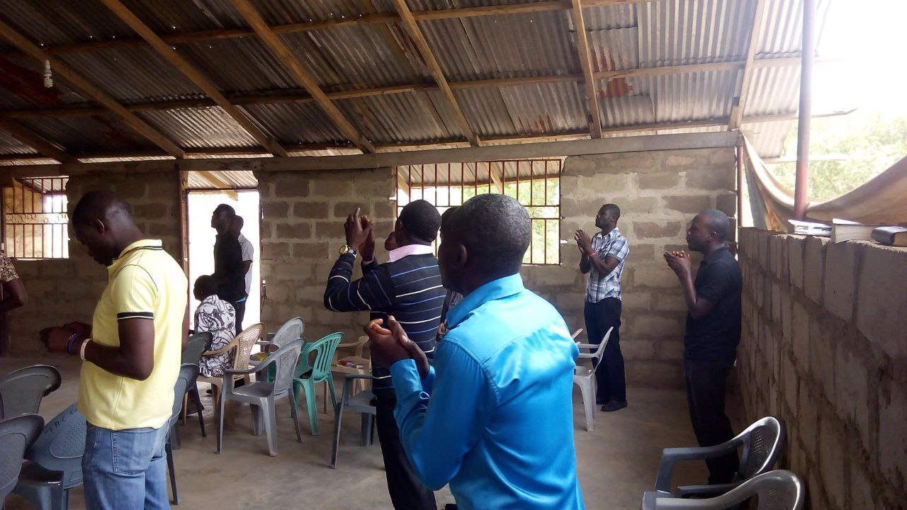

Missions 2026 Report: “IN HIM IS LIFE”
Theme Scripture: John 1:4 • Locations: Nkroful and Teleku Bokazo (Teleku Bokaso), Axim Area, Western Region, Ghana.
Organized by The Apostolic Church-Ghana (TAC-Ghana), Zoe Worship Centre (aZWC) in its 4th consecutive strategic partnership with Tirzah Oasis Foundation, alongside medical screening partner OKB Hope Foundation. 80 missionaries deployed; 518 souls won to Christ; 156 screened medically; 40 baptized; and 2 brand-new Local Assemblies established!

Key Achievements at a Glance
Verified outcomes from 9 days of intense evangelism, hospital clinics, and church planting in Nkroful & Teleku Bokazo.

Comprehensive Soul-Winning Data
Detailed demographic breakdown across evangelism methods, gender distribution, and age categories.
By Category & Gender
Souls documented during one-on-one outreach and crusade callings.
| Category | Female | Male | Total |
|---|---|---|---|
| New Convert | 220 | 146 | 366 |
| Rededicant | 80 | 72 | 152 |
| Grand Total | 300 | 218 | 518 |
By Outreach Method
Door-to-door, open-air crusades, and dawn broadcasts.
| Method | Converts | Rededicants | Total |
|---|---|---|---|
| House-to-House | 191 | 119 | 310 |
| Open-Air Crusade | 138 | 12 | 150 |
| Dawn Broadcasting | 37 | 21 | 58 |
| Combined Total | 366 | 152 | 518 |
By Age Group
| Age Range | New Convert | Rededicant | Total |
|---|---|---|---|
| 12 and under | 68 | 7 | 75 |
| 13 to 19 years | 99 | 36 | 135 |
| 20 to 29 years | 117 | 63 | 180 |
| 30 and above | 82 | 46 | 128 |
| Total Souls | 366 | 152 | 518 |
Sunday Attendance & Baptisms (40)
| Location Assembly | Sunday Attend | Water Baptisms | Gender Split |
|---|---|---|---|
| Nkroful | 107 | 16 | Baptized: 11 F, 5 M Attend: 57 F, 50 M |
| Teleku Bokazo | 93 | 24 | Baptized: 7 F, 17 M Attend: 31 F, 62 M |
| Combined Total | 200 | 40 | 18 F • 22 M (Baptisms) |
Free Medical Outreach Analysis
Delivered in proud collaboration with OKB Hope Foundation, DAS Pharma, and certified medical professionals.
156 Patients Screened, Consulted & Medicated
Free vital signs assessment, point-of-care testing, physician consultations, and dispensary medication.
Primary Diagnoses & Clinical Analysis:
Malaria remains dominant; vector control, rapid diagnostic testing, and prompt antimalarial therapies are critical for prevention.
Hypertension and anaemia represent high burdens; ongoing monitoring, lifestyle guidance, and renal/cardiac screening recommended.
Musculoskeletal and neuropathy complaints represent the primary reason patients seek attention; long-term pain management is vital.
Diverse secondary load requiring integrated primary health care and women's health screening.
Miracles, Testimonies & Kingdom Acts
Supernatural deliverances, physical healings, and acts of love recorded during the mission trip.
Deliverance from 10-Year Alcohol Addiction
During intensive house-to-house evangelism in Teleku Bokazo, a resident struggling with severe alcoholism for over a decade broke down under the power of the Holy Spirit, accepted Christ, and confessed freedom from chemical dependency.
Renunciation of Talisman & Powder
A newly converted brother willingly surrendered his occult talismans and ritual powders previously used for spiritual protection, acknowledging that Jesus alone is his shield, refuge, and eternal life.
Two Muslim Converts Embrace Jesus
Through gracious cross-cultural witnessing and compassionate dialogue, two individuals from Islamic backgrounds openly accepted Jesus Christ as their personal Lord and Savior, joining the discipleship class.
Instant Healing of Chronic Migraine
At the Nkroful evening crusade, a sister suffering from debilitating, unrelenting headaches that resisted painkillers received prayer from the ministry team and testified of instantaneous, permanent relief.
Severe Skin Sores & Itching Healed
A community member tormented by severe generalized sores and intractable pruritus was prayed for during the daytime clinic. The burning sensation vanished immediately and skin restoration followed swiftly.
Bandaged Leg Mobility Restored
A patient arriving with a heavily bandaged, agonizingly painful leg experienced supernatural ease and mobility upon prayer, walking unhindered without agonizing limping to the astonishment of onlookers.
Renovation of Church of Pentecost (Macedonia Assembly, Nkroful)
The Church of Pentecost, Macedonia Assembly (Nkroful) graciously hosted our 80-member mission team, providing premises for sleeping quarters, morning devotions, tarry nights, and leadership briefings.
In deep gratitude, the aZWC missions leadership renovated their sanctuary and fully equipped it with a brand-new complete Public Address (P.A.) system, leaving a permanent legacy of unity in Christ.
Equipping the 2 New Local Assemblies:
- Rented physical place of worship secured for each assembly
- 50 heavy-duty plastic chairs donated to Nkroful Assembly
- 50 heavy-duty plastic chairs donated to Teleku Bokazo Assembly
- Dedicated P.A. systems installed for both congregations
- Continuous discipleship and resident pastoral follow-up plan
Financial Statement & Budget Execution
Full accountability of all kingdom resources invested into Nkroful & Teleku Bokazo.
| Subcommittee | Expenditure (GHS) | % of Budget |
|---|---|---|
| 1. Transport (Chartered Convoys & Fuel) | 46,500.00 | 33.95% |
| 2. Land & Pavilion (2 Rented Church Places) | 30,000.00 | 21.90% |
| 3. Logistics, Chairs, P.A. Systems & Power | 23,400.00 | 17.08% |
| 4. Food & Catering (Feeding 80 Missionaries) | 12,520.00 | 9.14% |
| 5. Medical Outreach & Prescriptions | 11,795.00 | 8.61% |
| 6. Evangelism, Tracts & Crusades | 5,870.00 | 4.29% |
| 7. Publicity, Banners & Print | 3,702.00 | 2.70% |
| 8. Children Ministry (Deworming & VBS) | 1,924.00 | 1.40% |
| 9. Sanitation & Hygiene | 615.00 | 0.45% |
| 10. Media & Visual Coverage | 400.00 | 0.29% |
| 11. Prayer Committee Supplies | 160.00 | 0.12% |
| 12. Secretariat & Admin Documentation | 80.00 | 0.06% |
| GRAND TOTAL EXPENDITURE | GHS 136,966.00 | 100.0% |
Leadership & Execution
The 2026 Axim Area Mission operated with 15 functional subcommittees staffed by 80 devoted missionaries under the leadership of:
Our Recognized Partners & Sponsors:
Special appreciation goes to:
- Tirzah Oasis Foundation: 4th consecutive partnership providing co-laboring missionaries, welfare, and logistics.
- OKB Hope Foundation: Certified clinical screening, physician consultations, and patient diagnostics.
- Dannex Ayrton Starwin Plc (DAS Pharma): Essential prescription pharmaceuticals and medical supplies.
- Sunda International Ghana: Benevolent detergent, soap relief, and hygiene supplies for families.
- Church of Pentecost (Macedonia Assembly): Hosting and community co-laboring in Nkroful.
- TAC-Ghana Galilea District: Spiritual oversight, presbytery blessings, and church planting coverage.